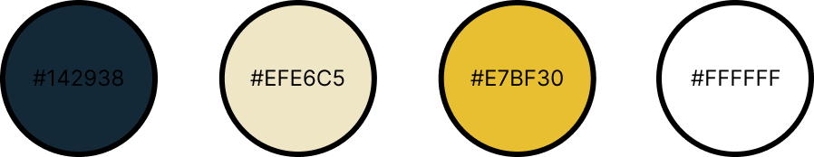
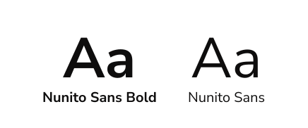
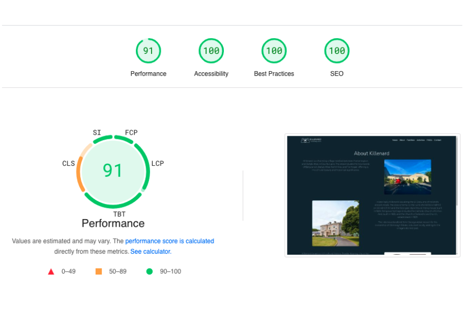
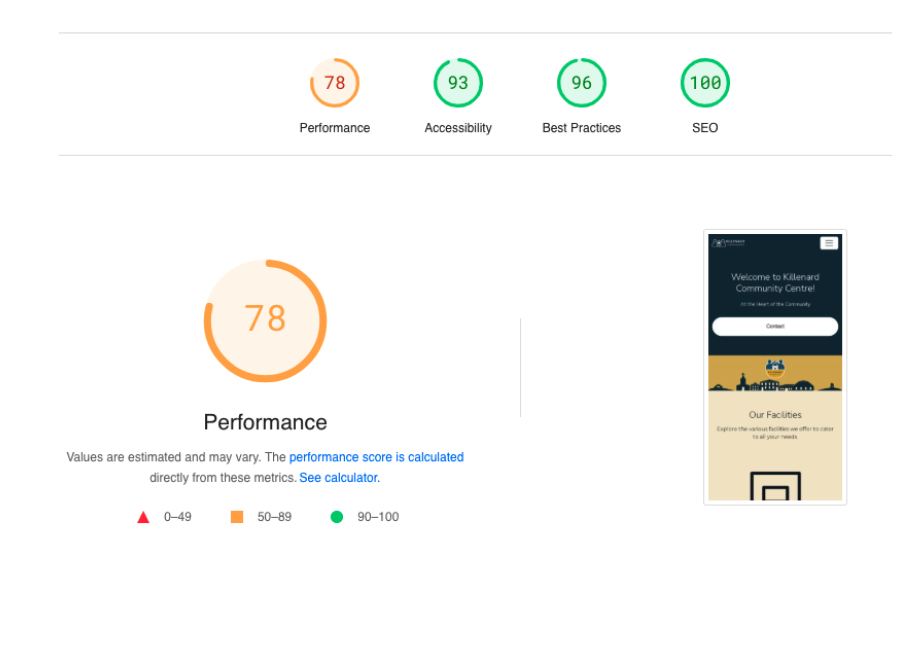
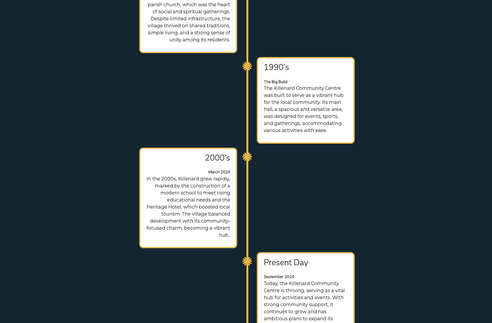

Visual System
The visual language was designed to feel community-focused, approachable, and modern, while still being clear enough for practical everyday use.
Colour Palette
The colour palette reflects the local identity of the village, drawing from tones associated with the GAA team and school. A traditional royal blue was adjusted to a deeper navy to improve visual accessibility, while a brighter blue is used selectively for calls-to-action.
Stronger tones provide structure and identity, while lighter neutrals keep the interface clear and easy to navigate.
#142938 • #EFE6C5 • #E7BF30 • #FFFFFF

Fonts
The design was initially explored in Figma using Avenir, but this was later changed to Nunito Sans for the final build. Nunito Sans provided a similar clean appearance while being more practical for browser use. Its rounded forms suit a community-focused website and align with the use of fully rounded buttons across the interface.
Although the typeface includes a wide range of weights, headings were kept at moderate weights to maintain clarity and avoid an overly heavy visual style. This ensured readability across headings, navigation, and body text.
Aa Bb Cc — Nunito Sans

Accessibility and Colour Contrast
Accessibility was checked throughout the project, with particular attention paid to text and background contrast. WCAG colour contrast checking tools were used to ensure that the chosen palette remained readable across the interface.
Key combinations included navy with white, cream with navy, and gold with navy. These pairings helped preserve the visual identity of the site while also supporting accessibility standards.
This was especially important because the palette was drawn from local references, so colour choices needed to work both symbolically and functionally.


Google Lighthouse Testing
Google Lighthouse was used to review the site across performance, accessibility, best practices, and SEO. SEO achieved very strong results, while accessibility remained high through the use of alt text, contrast checking, and clear content structure.
Performance scores were lower on some pages due to placeholder imagery used during development. These images can be replaced later with more optimised assets once the centre’s renovations are complete.
Overall, the tests helped confirm that the site was not only visually functional, but also technically sound across key web quality measures.


Vertical Timeline
A vertical timeline was used to present milestones, events, or centre updates in a structured and engaging way. This pattern helps break up information visually and gives users a clearer sense of progression, history, or upcoming activity within the community space.
It also adds a stronger sense of storytelling to the page, which is particularly useful for a community-focused project where people may want to understand the centre’s activities over time.
